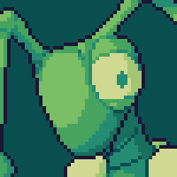
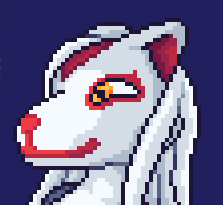

Aurpheus (He/Him)

Species: Mantis
Just me :3
I'm a mantis and try to draw transformation art on the internet !
What you see is drawn all by me !
And the awful code is also made by me...
The other ones are less chill >w<
A shy mantis that draws, a reflection of myself.
Nothing much really !
>>> Ref picture <<<
Hazel (She/Her)
Species: Tanuki
(Hazel glances at you annoyed)
Hi, I'm Hazel and I have this antique shop...
Look, can you just buy something ? or leave. Please.
And no funny business... I know more self defence than you think...
Inside the dusty old shop, Hazel cleans stuffs around making it less dusty.
She is the owner, tho a rather cynical one, having abandoned the promise of riches.
She is lazy now, and can be angry easily with customers, however the customers always lose.
Her favourite trick is to alter and brainwash the customers into working inside of the shop for free, however this power works only for a certain timespan.
Her favourite way to do so is either using masks or modelling them like clay.
She enjoys very much that part of her job, at the point that she might pull something if on a certain mood...
However you might discover a sweeter side to her if you play on her side somehow.
Her shop houses many artefacts with transformation powers... With pretty sweet deals...
>>> Ref picture (NSFW) <<<
Kitseia (She/Her)

Species: Kitsune
(Kitseia looks at yourself amused)
Ohhh,another visiter !
Only a few dare to approach me... and fewer to talk to me !
(She approaches you with a mask in her hands)
You are worthy of joining me !
As you're walking alone in the night, you find a majestic tall lady on the other side of the road.
She looks like an apparition.
Kitseia won't talk much to you if you aren't part of her crew...
However talking to her ain't much better... She's very self centered...
That's why probably her crew is only made of clones of herself...
Her mode of transformation is always the same however.
She can create an infinity of masks when pulling on her face.
These masks when worn transforms you into her in both body and mind forever if not countered by another person.
She prefer forcing it onto yourself, more fun for her this way.
She uses her 9 tails to restrain you, making you unable to leave.
She just likes to mess with people as well. But her final goal is to make more clones of herself...
>>> Ref picture (NSFW) <<<
>>> Comic (NSFW) <<<